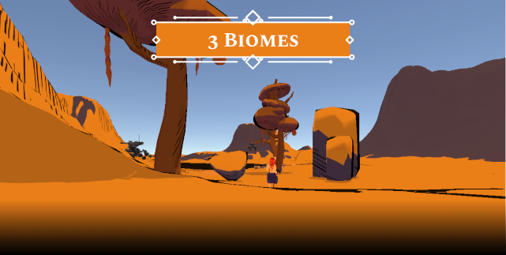
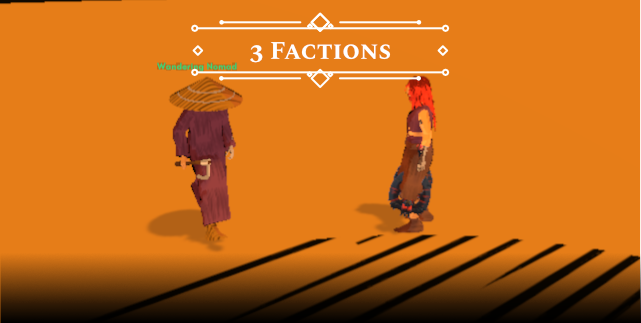
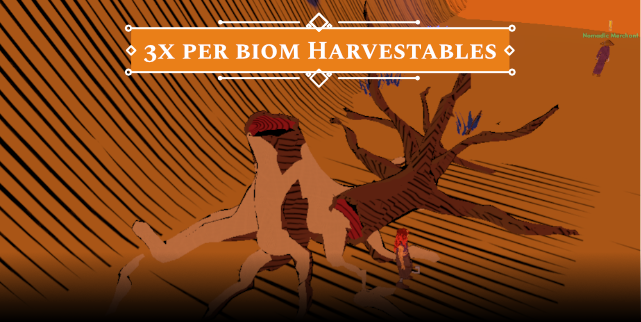
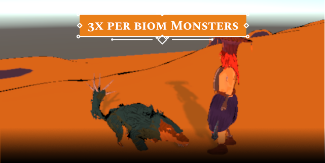
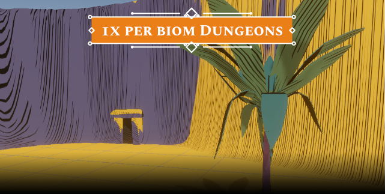
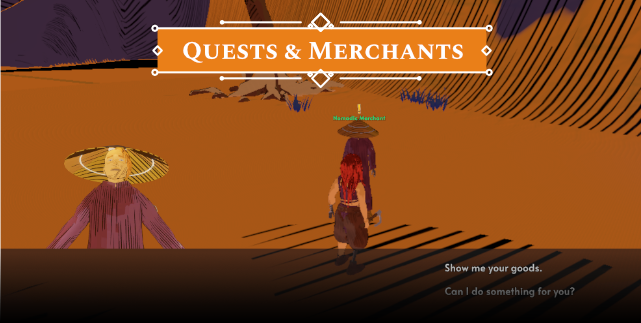
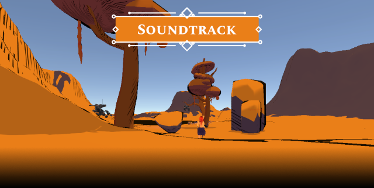
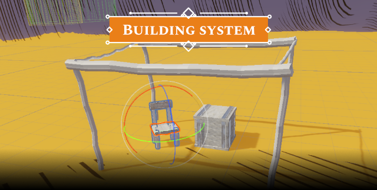
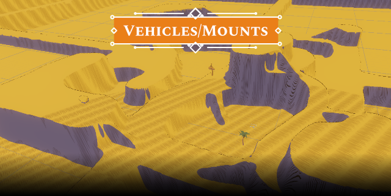
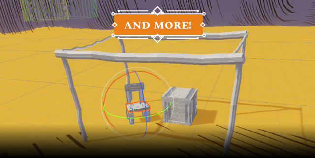

Pouště, zelené oblasti, močály a další biomy. Každý z nich má mít vlastní setkání, počasí, výtvarný styl i vertikální průchod světem.
Vývoj her
Arcanepunk Lost je sólově vyvíjené indie RPG inspirované arcanepunkem. Odehrává se v alternativní dystopické budoucnosti, kde se svět zasekl někde na přelomu viktoriánské éry a pozdějšího kolapsu civilizace. Technologie, magie, anomálie, frakce, náboženství i přežívající klany tu existují vedle sebe. Po dvou stech letech od pádu světa už nejde jen o otázku přežití, ale i o to, na čí stranu se postavíš: technologie, magie, nebo obojí.

Pouště, zelené oblasti, močály a další biomy. Každý z nich má mít vlastní setkání, počasí, výtvarný styl i vertikální průchod světem.

Každý biom má obsahovat vlastní frakce, unikátní NPC, frakční questy a časem možná i systém skutečné volby mezi frakcemi.

Svět má působit živě. Stromy, rudy a další interaktivní objekty budou těžitelné, sběratelné a částečně navázané na fyziku i plynutí času.

Svět zaplní zvířata i monstra. Základ je několik unikátních potvor pro každý biom, vlastní modely a do budoucna také bestiář.

Dungeony budou klíčové pro získávání důležitých materiálů, unikátní výbavy i řešení hádanek. Některé budou víc magické, jiné steampunkové.

Questing má být základem znovuhratelnosti. Cíl je frakční quest systém a časem i úkoly, které dokážou změnit svět nebo vymazat celé frakce.

Hudba a zvuk jsou velká disciplína sama o sobě. Probíhá hledání vhodných sound artistů a práce na prvních stopách.

Building systém má v budoucnu umožnit stavbu domovů, továren nebo čarodějnických doupat. Je to vzdálenější cíl, ale důležitý pro fantasy sandbox část hry.

Svět je rozdělený do chunků a počítá s vertikalitou. Hráč bude cestovat přes více pater, výškové úrovně a časem možná i přes primitivní vozidla nebo mounty.

Práce je pořád obrovské množství. Vývoj pokračuje sólo, takže prioritou zůstává optimalizace, lokalizace a stabilní základ hry.
Je to osobní projekt silně inspirovaný RPG jako Kenshi, Outward nebo Arcanum. Cílem je svět s vlastním lore, silnou komunitou a prostorem pro budoucí modding. Nemusí být za každou cenu unikátní, hlavně musí být zábavná.
Frakce, náhodné statistiky předmětů, časem možná i náhodní nepřátelé, permadeath nebo generované dungeony. Důležité je, aby každé hraní nabízelo trochu jiný průběh.
Zatím není definitivně rozhodnuto. Po finálním vydání ale spíš počítám s menším jednorázovým nákupem, pravděpodobně přes Steam.
Používám Unity 2021 LTS. Část vývoje stojí i na assetech jako RPG Builder od Blink Studia. Grafiku, modely i shadery si ale dělám sám a vlastní mechaniky postupně dopisuji.
Zatím ne. Počítám s časově omezenými testovacími buildy zdarma. Více informací bude na Discordu, později vznikne i Steam nebo Itch stránka.
Aktivně teď nehledám tým ani vydavatele. Pokud máš ale zájem, můžeš mi napsat přes kontakty na webu. Programování i zvuk jsou pořád oblasti, kde mám největší rezervy.
Na webu vycházejí blog posty se štítkem arcanepunk a průběžné novinky dávám i na Discord, kde je komunikace osobnější.